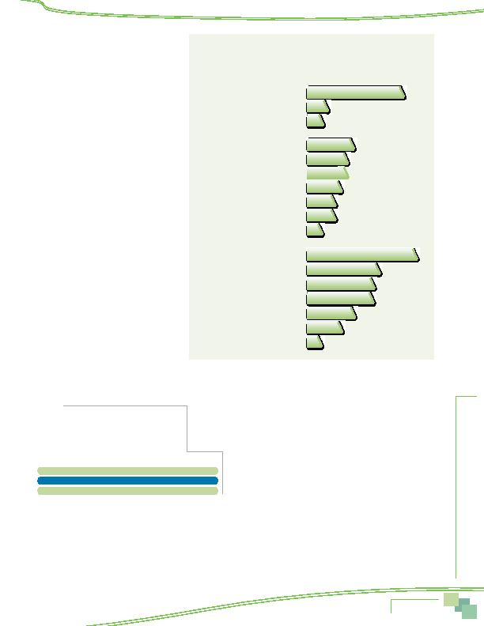

MWCOG-Comm
uter Conn
ecti
on
s-- 2010 State o
f th
e Comm
ute Report
2 3
they considered. Figure 12 displays the decision
factors respondents mentioned.
About two in ten respondents cited a
commute-related factor as one factor that they
considered in the moving decision. Length or
ease of commute was cited by 15%; smaller
percentages said the cost of commuting or the
range of commuting options available at the new
location had been a factor.
The job factor of career advancement was
noted by 17% of respondents as a factor in the
decision; job transfers (11%), job satisfaction
(10%), and income/salary (10%) each were
named by at about one in ten respondents.
About a third named a residential factor, such
as the cost of living (7%), size of the house
(6%), cost of the house (6%), and quality of the
neighborhood (5%) as factors they considered.
Three groups of respondents were more likely
than were others to cite commute factors as
important to their decision, presumably, because
they expected to encounter a more difficult com-
mute with their move or because they wanted to
improve their commute with the move:
n
Respondents who lived in the Inner Core
24% of respondents who lived in the Inner
Core noted commute factors compared with
16% of Middle Ring and 17% of Outer Ring
respondents
n
Respondents who worked in the Middle Ring
22% named commute factors compared with
15% of Inner Core and 15% of Outer Ring
workers.
n
Respondents who moved from another
location in the Washington region 20% of respondents who moved within the region named commute factors compared with
12% for respondents who moved from outside the region
Respondents who had made a move were asked how
important commuting factors had been in their decision,
relative to the other factors they considered. Table 2 shows
that three in ten (29%) said the commute factors were
more important than others, four in ten (38%) said they
were about equally important, and a third said commuting
factors were less important.
Finally, respondents who made a residential location
change were asked if their employers had offered any
information about financial incentives that might be avail-
able if the respondent moved to a home that was closer to
the work location or moved closer to a bus stop or transit
station. These questions were designed to measure the im-
pact of the "Live Near Your Work" program that Commuter Connections implemented in 2008. This program encourages employers to
inform employees of several state and/or federal financial incentives offered to employees who choose a home location that reduces
the distance they travel to work or who choose a home location near a transit stop.
In 2010, six percent of respondents who had moved their homes had received information from their employers. This was about
the same percentage as reported receiving information in 2007 (7%). Four percent said they received information on financial incen-
tives to move closer to transit, again about the same as the five percent who noted this information in the 2007 SOC survey.
Figure 12
Factors Considered in Home or Work Location Changes
Respondents who Made a Change in Work or Residence Location
7%
6%
6%
15%
3%
2%
5%
4%
4%
2%
7%
10%
10%
11%
17%
5%
2%
Commute Factors
Length or ease of commute
Commuting options available
Cost of commute
Residential Factors
Cost of living
Size of house
Cost of house
Quality of neighborhood
Closeness to family/friends
Quality of schools/stay in school system
Bought new house
Job/Career Factors
Career advancement
Job transfer
Job satisfaction
Income, salary
Job opportunities for spouse/self
Laid off, no job, job ended
Job requirement, no choice
Table 2
Importance of Commute Ease Relative to
Other Factors Considered in Home
or Work Location Changes
Respondents who Made a Change in Work or
Residence Location
Importance of Commute Ease
Percentage
More important than other factors
29%
About the same importance as other factors
38%
Less important than other factors
33%
Survey Results